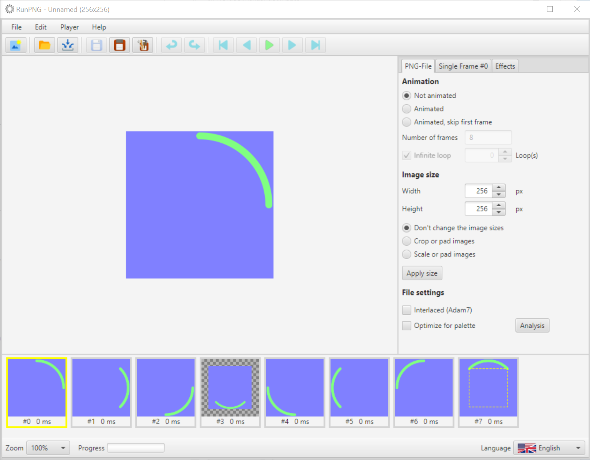
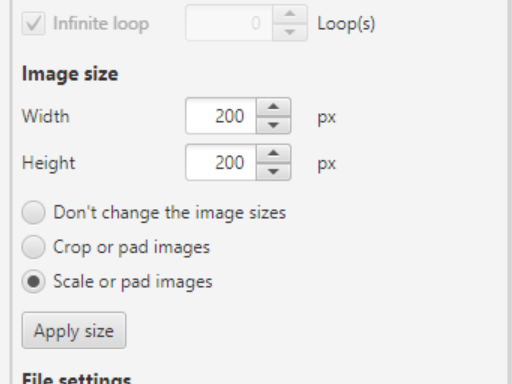
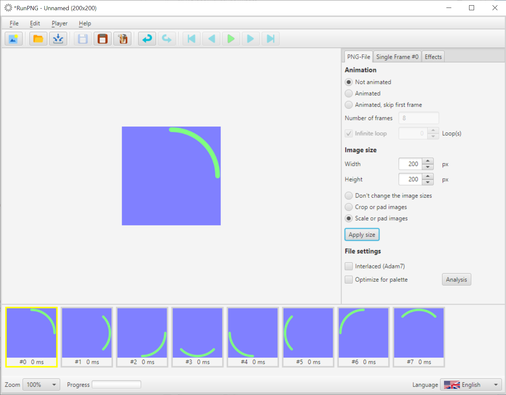

Frame Sizes
Different Sizes
The size of an APNG image sequence is the same for all individual images. Width and height are stored in a header data chunk like in a simple PNG file. Even if it may look different within an APNG file. But the user does not usually come into contact with this.
Picture Sequence with Different Sizes
In the folder RunPNG/doc/samples/sectors 1/ there is a series of images (Frame #0.png - Frame #7.png) that we want to import. Six of these images have the dimensions 256 x 256 pixels. But two deviate from them.
At a first glance you can see that the pictures are not of the same size. If you hover the mouse pointer over frame #3, for example, the size 192 x 192 will be read there. It is too small for the purpose. The opposite is the case with frame #7 at 384 x 384 pixels. That's too big. In this case, RunPNG uses the yellow dashed frame to indicate the relative image size with which the application is currently working.
We could of course save an animated sequence with the material as it is. However, RunPNG has to adhere to the common size. Frame #3 would get a transparent filling around the outside and with frame #7 everything that protrudes would be cut off. Implicitly as if the user had cropped or filled images. Which might not be desirable in the rumbling result.
Common Sizes

But the given sizes are all not suitable. Because we want to save a small moving activity or waiting symbol with the dimensions 200 x 200 pixels. To do this, we enter the new width and height under the PNG File tab, select Scale or pad images and click on Apply size. Then all single images will get the same size.
Now we just have to tell the application under the PNG File tab that we want an animation. And under the tab Single Frame we set 100 ms. Don't forget to press Delay for all frames.
Note: Sometimes not all of a series of images have the same aspect ratio. Or a different aspect ratio was entered under the PNG File tab. RunPNG scales and crops symmetrically and centered. If the aspect ratio is unsuitable, this can result in gaps on the outside. In that case the ... or pad images means that they are then padded with transparency.